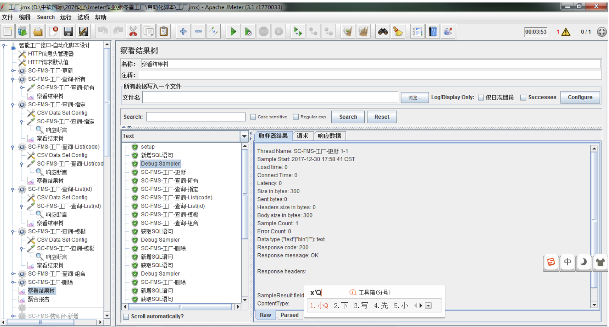
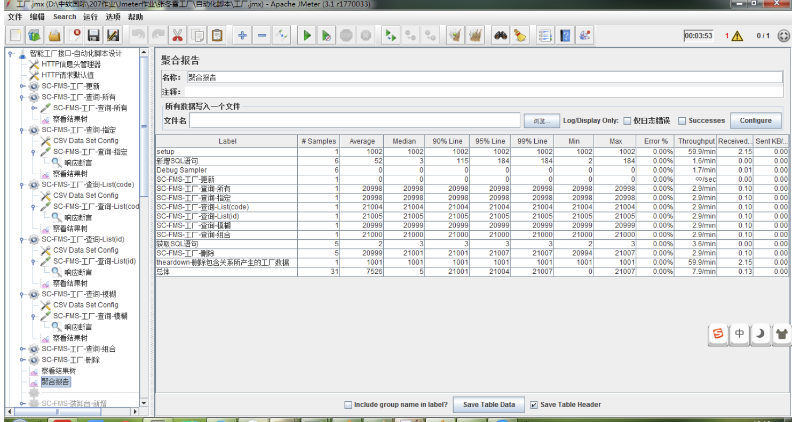
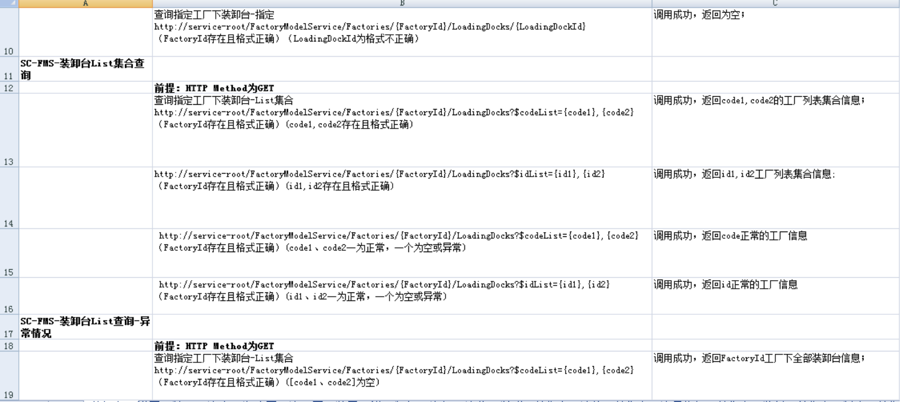
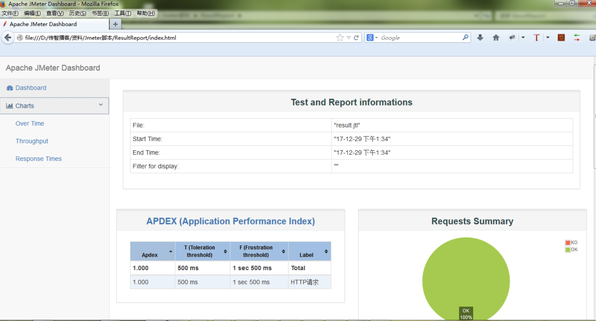
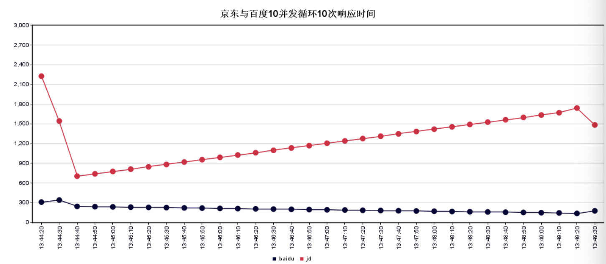

接口测试
学习目标
- 了解接口测试服务对象，基本作用
- 接口测试环境插件工具
掌握jmeter的使用
- 环境搭建
- 8大元件的作用和简单的使用
- 脚本录制
- 常用函数的使用
- 功能脚本的编写
- 自动化脚本的编写
- 性能脚本的编写
- 掌握接口测试的接口清单 整理
掌握接口测试的测试用例编写
- 编号，标题，处理，预期结果
2. 接口测试课程大纲
课程安排
| 序号 | 阶段 | 内容 |
|---|---|---|
| 01 | 第一阶段 | - 理解接口测试 |
| 02 | 第二阶段 | - 熟悉Jmeter工具组成 |
| 03 | 第三阶段(核心) | - 参数化、集合点、关联、断言、数据库 |
| 04 | 第四阶段 | - 属性管理器及逻辑控制器 |
| 05 | 第五阶段 | - 项目实战(接口功能脚本、自动化脚本、性能脚本) |
3. 接口学完样品
3.1 Jmeter工具元件使用

3.2 聚合报告

3.3 用例设计

3.4 html性能报告

3.5 Aggregate Graph
3.6 Response Time

4. 学完课程,学到什么
1. 熟练使用Jmeter工具；
2. 掌握接口测试规范；
3. 掌握基于Jmeter完成接口测试（功能、自动化、性能）脚本；
4. 掌握基于Jmeter对Web项目性能压测；